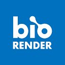

new york. i build product and growth teams, from a team of one to a fifteen-person org, and own the revenue line end to end.
01p&l ownership — part of financial planning for the whole business; a budget line covering three key results
02org building — all 3 pms promoted at dashlane, 2 of 4 at prizepicks
03growth systems — one roadmap for acquisition, activation, monetization, and lifecycle
04monetization & pricing — pricing tests, packaging, and checkout at every company, first growth hire twice, payments at prizepicks
05agentic growth — agent-native acquisition at superhuman, owned like any other channel
06measurement — built the experimentation system at wetransfer; test throughput tripled
case work — seven questions, worked end to end
proton — lumooct 2026
how does a privacy-first ai assistant grow beyond the people who already use it, without spending the trust that makes it worth using?
what came out: a three-move plan — fix the free path, reset paid around one useful task, pilot a subscriber add-on. base case: ~$323k year-end ARR.
the deck · the wireframe prototype
forus — provider onboardingnov 2026
where does provider onboarding leak, and what does the flow look like when every step earns the next one?
what came out: two live sign-ups: 59 seconds to a waitlist, 3:10 to a portal — and a nine-screen rebuild that keeps every state visible.
the teardown · the rebuilt flow
granolamar 2026
how does a meeting-notes product become the bridge from talk to work — and charge for the crossing?
what came out: recipes turn notes into work; shared artifacts pull the team in. capture → operationalize → expand.
the deck · the three-state prototype
bonusly — admin osfeb 2026
an admin console runs reports. what would it take for it to run the recognition program itself?
what came out: an operating loop for admins — orient, decide, act, learn — programs ranked as levers, cost with a governance path.
the pre-read · the prototype · the brainstorm board

biorender
jan 2025what do two years of usage data actually say about how scientists work — and where the product grows next?
what came out: from 1.91m signups: fix the step-three drop, get a first figure in 48 hours, lift six-month retention past 22%.
the case board · the deck
chatgptdec 2024
which metrics actually measure the core business, and which ones only feel like they do?
what came out: KPI pillars for engagement, monetization, and operations — guiding stars and targets for each.
the deck
lyftdec 2024
what should drivers be paid on the airport–downtown route so the marketplace clears on both sides?
what came out: $20.87 a trip: the steady-state point where match rate, churn, and CAC net out.
the deck · the model